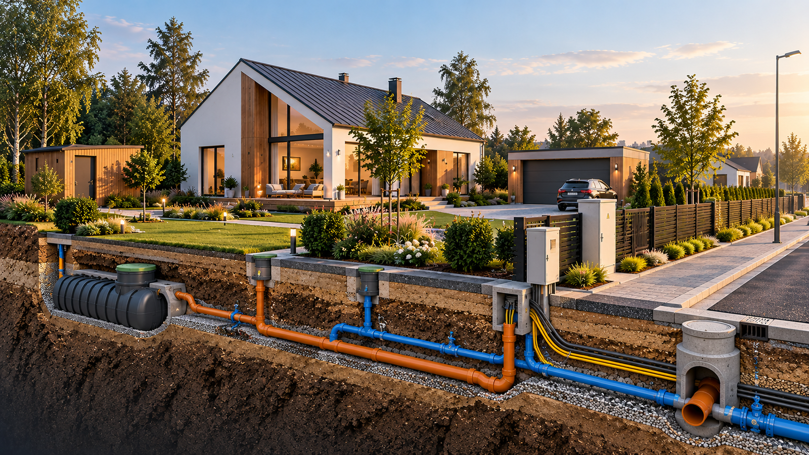

ARHITEKTUUR + TEHNOVÕRGUD
Üksikelamu ja tehnovõrkude visualiseering
Visualiseering, mis annab ühes vaates edasi hoone arhitektuuri, väliala, juurdepääsu ning maa-aluste tehnovõrkude põhimõttelise lahenduse.
Siia kogume valiku EHR Projektid OÜ projektlahendustest, tehnilistest joonistest ja realistlikest visualiseeringutest. Portfolio täieneb jooksvalt.

Visualiseering, mis annab ühes vaates edasi hoone arhitektuuri, väliala, juurdepääsu ning maa-aluste tehnovõrkude põhimõttelise lahenduse.
Kirjelda lühidalt, millega abi vajad. Vaatame koos, millest oleks kõige mõistlikum alustada.